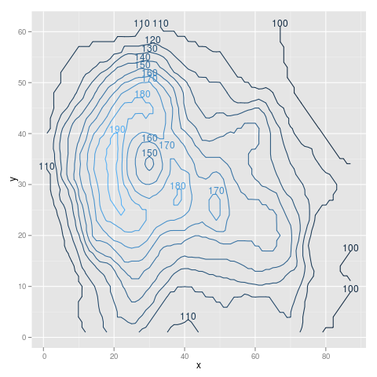

Positioning Method for the bottom of a group of points.
direct.label(p,"bottom.pieces")
Positioning Method for the top of a group of points.
direct.label(p,"top.pieces")
## example from help(stat_contour)
library(reshape2)
volcano3d <- melt(volcano)
names(volcano3d) <- c("x", "y", "z")
library(ggplot2)
p <- ggplot(volcano3d, aes(x, y, z = z))+
stat_contour(aes(colour = ..level..))
|
Positioning Method for the bottom of a group of points. direct.label(p,"bottom.pieces") |
|  | Positioning Method for the top of a group of points. direct.label(p,"top.pieces") |
| Please contact Toby Dylan Hocking if you are using directlabels or have ideas to contribute, thanks! |
| Documentation website generated from source code version 2014.1.27 (svn revision 675) using inlinedocs. |
| validate |